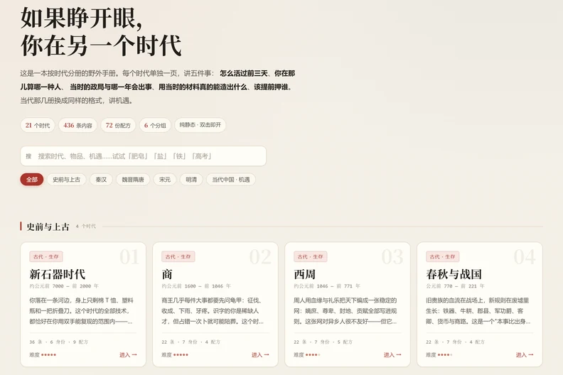
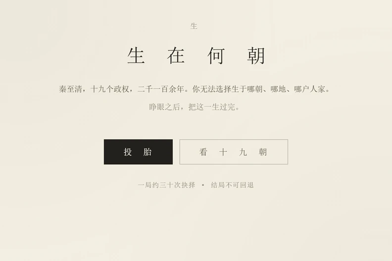

三卷 · 三种活法
人间三卷
你不在此时此地
三卷写的都是同一件事：人怎么在别处活下去。
一卷让你查，一卷让你活一遍，一卷让你承认自己放弃了什么。
卷一手册
穿越求生指南
如果睁开眼，你在另一个时代
按时代分册的野外手册。每个时代讲五件事：怎么活过前三天、你在那儿会算哪一种人、当年的政局与哪一年会出事、用那时的材料真能造出什么、该提前押谁。二十一个时代，从新石器一路到当代中国。
翻卷→
卷二模拟
生在何朝
秦至清，把一生过完
投胎交给历史。随机生于十九个政权中的某一朝、某一地、某一户人家——宗室、勋贵、吏家、士、商、农、佃、贱籍，八等人家，八种活法。一局二十六到三十个回合，三十来次抉择，最后看你活成了什么、家里还剩什么。
投胎→
卷三抉择
如果当时
人生的岔路，你敢重走几次
现代人的电车难题。五百万还是清华，六道岔路，十分钟走完一生。这里没有正确答案，只有你愿意放弃什么——结算时它会一条一条列给你看。
走一局→联系
写信来
三卷都是一个人在写。内容有误、想补一朝一事、或者只是想聊聊某个时代，都可以写信。
回得慢，但都会看。
点开就是写信，不必复制。